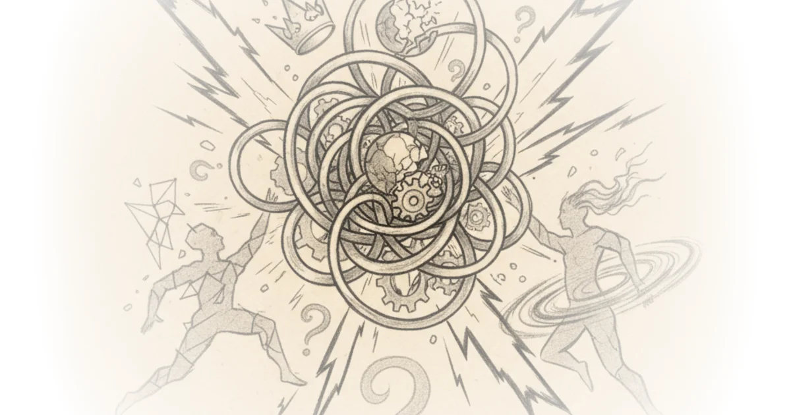

Drawing zhuangzi with colored pencils Helen De Cruz · Helen De Cruz ·Apr 4, 2025 · 13 min read · Philosophy
What's missing in the boycott of repeater books Daniel Tutt · Daniel Tutt ·Apr 2, 2025 · 13 min read · Philosophy
Understand, align, cooperate: AI welfare and AI safety are allies Robert Long · ·Apr 1, 2025 · 13 min read · Philosophy
The worst kind of sequel Tom van der Linden · Like Stories of Old ·Feb 21, 2025 · 24 min read · Philosophy
Monopoly world: Oligarchy & authoritarianism Then & Now · Then & Now ·Feb 21, 2025 · 55 min read · Philosophy
Will the big bang happen again (and again)? Matt O'Dowd · PBS Space Time ·Feb 20, 2025 · 14 min read · Philosophy
Why star wars can’t move forward Tom van der Linden · Like Stories of Old ·Jan 30, 2025 · 19 min read · Philosophy
Why Musk is wrong about mars Sabine Hossenfelder · Sabine Hossenfelder ·Dec 18, 2024 · 16 min read · Philosophy
How capitalists conquered the world Then & Now · Then & Now ·Dec 14, 2024 · 193 min read · Philosophy
Live debate: Cliffe and stuart knechtle vs alex o'connor and phil halper Alex O'Connor · Cosmic Skeptic ·Dec 12, 2024 · 155 min read · Philosophy
Advertising doesn't work the way you think it does Jeffrey Kaplan · Jeffrey Kaplan ·Dec 3, 2024 · 20 min read · Philosophy
11 hour one million subscriber livestream Alex O'Connor · Cosmic Skeptic ·Nov 30, 2024 · 634 min read · Philosophy
The 50 most life-changing movies Tom van der Linden · Like Stories of Old ·Nov 21, 2024 · 155 min read · Philosophy
Episode #216 ... the self-overcoming of nihilism - kyoto school pt. 1 - nishitani Stephen West · ·Nov 18, 2024 · 35 min read · Philosophy
Episode #215 ... how mysticism is missing from our modern lives Stephen West · ·Oct 31, 2024 · 31 min read · Philosophy
Movies i thought about while my wife was dying Tom van der Linden · Like Stories of Old ·Oct 31, 2024 · 30 min read · Philosophy
Episode #214 ... framing our being in a completely different way Stephen West · ·Oct 21, 2024 · 35 min read · Philosophy
The complete philosophy of christopher nolan Tom van der Linden · Like Stories of Old ·Oct 16, 2024 · 208 min read · Philosophy
Episode #213 ... deleuze interprets nietzsche Stephen West · ·Oct 13, 2024 · 36 min read · Philosophy
Episode #212 ... nietzsche and critchley on the tragic perspective Stephen West · ·Sep 30, 2024 · 38 min read · Philosophy
Our worst nightmares are those we've created Tom van der Linden · Like Stories of Old ·Sep 30, 2024 · 29 min read · Philosophy
AI literacy - lecture 8.2: Interpretations and misinterpretations of artificial general intelligence Kenny Easwaran · Kenny Easwaran ·Sep 16, 2024 · 15 min read · Philosophy
AI literacy - lecture 8.1: Philosophical issues for "general intelligence" Kenny Easwaran · Kenny Easwaran ·Sep 16, 2024 · 18 min read · Philosophy
The rise and fall of the mainstream media Then & Now · Then & Now ·Aug 1, 2024 · 90 min read · Philosophy
Naming and necessity by saul kripke - part 1 Jeffrey Kaplan · Jeffrey Kaplan ·May 9, 2024 · 22 min read · Philosophy
Movie monologues that changed my entire worldview Tom van der Linden · Like Stories of Old ·Mar 26, 2024 · 22 min read · Philosophy
The string theory wars and what happened next Sabine Hossenfelder · Sabine Hossenfelder ·Mar 9, 2024 · 20 min read · Philosophy 